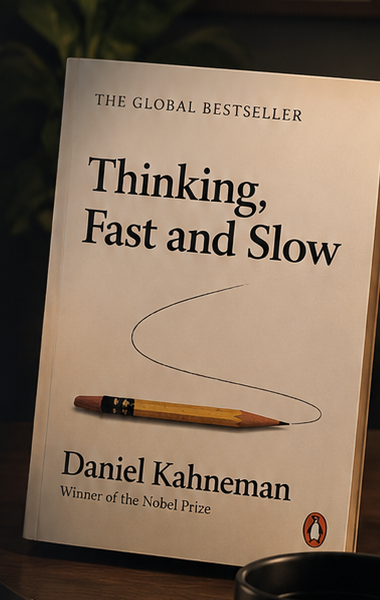

Turn study break scrolling into high-yield retention.
Swap algorithmic doomscrolling for 30-second mental model cards and active recall tests distilled from seminal non-fiction.
Prototype mode • Your data stays on this device
Curated Mental Models
STUDY THEME
Type to search mental models, textbooks, and key concepts
DAILY STUDY FEED · 6 CONCEPTS
One scroll. One high-yield concept.
🏷Filtered view
📚
No cards found in this subject module yet
Our student curriculum team is actively uploading new mental models for this domain.
CARD · 01ORIENTATIONSTART HERE
01 / 06
THE SCROLLWISE CONCEPT
Small ideas compound into big decisions.
Most student phone usage during study breaks is passive algorithmic doomscrolling (TikTok, Reels, Shorts) which increases cognitive load. ScrollWise recalibrates 5-minute study breaks into bite-sized mental model retention.
HOW TO USE SCROLLWISE
Scroll down or use J / K keys to review concept cards. Tap Save to Deck to bookmark cards for exam prep. Tap Read Notes for deep-dive textbook breakdowns.
SCROLLWISE · STUDENT STUDY LAB
CARD · 02🧠 PSYCH 101COGNITIVE BIAS
02 / 06
CONFIRMATION BIAS · DUAL PROCESS THEORY
We notice evidence that agrees with us more easily than evidence that challenges us.
When researching a term paper or evaluating an opinion, your mind instinctively searches for sources that confirm what you already believe. To build genuine academic rigor, deliberately look for data that could prove your premise wrong.
STUDY & RESEARCH APPLICATION
Before submitting any major research essay, write down: "What is the single strongest counter-evidence against my argument, and how does my thesis hold up?"
Required Reading: Thinking, Fast and Slow · Daniel Kahneman
CARD · 03💰 APPLIED ECONFINANCIAL LITERACY
03 / 06
WEALTH ≠ INCOME · OPTIONALITY
What you earn tells you about income. What you keep tells you about wealth.
Starting salaries are visible and easily spent. Wealth is the silent margin — the unspent emergency cushion that gives you leverage to decline toxic jobs, negotiate better offers, and own your schedule after graduation.
EARLY CAREER RULE
Avoid lifestyle inflation when entering the job market: maintaining low fixed expenses for 24 months creates compound optionality that outlasts any luxury purchase.
Recommended Reading: The Psychology of Money · Morgan Housel
CARD · 04⚡ STUDY HABITSBEHAVIORAL ARCHITECTURE
04 / 06
SYSTEMS OVER GOALS · RECURSION
A goal tells you where you want to go. A system determines what you do repeatedly.
Wanting a 4.0 GPA is a goal. Setting a daily 50-minute library focus block at 9 AM is a system. You do not rise to the level of your goals; you fall to the level of your study systems.
STUDENT STUDY HACK · FRICTION INVERSION
Put your phone in another room while studying (adds 20 seconds of friction). Bookmark your assignment tabs on your desktop (removes 2 clicks of friction).
Required Reading: Atomic Habits · James Clear
CARD · 05🚀 ENTREPRENEURSHIPSTRATEGY & PRODUCT
05 / 06
CREATE, DON'T JUST COMPETE · ZERO TO ONE
A new category can matter more than fighting harder inside an old one.
Copying established competitors forces you to fight for tiny fractional margins. Real innovation happens when a student project solves an unsolved pain point so distinctively that it creates its own new category.
STUDENT PROJECT PRINCIPLE
Do not build a generic clone of an existing app. Solve a hyper-specific student friction (like short-form micro-learning) 10x better than existing tools.
Recommended Reading: Zero to One · Peter Thiel
CARD · 06🎯 ACTIVE RECALL CHECKSPACED RETRIEVAL
06 / 06
CHECKPOINT QUIZ · TESTING EFFECT
Which action best counters confirmation bias?
Passive reading fades quickly. In cognitive psychology, active retrieval practice produces up to 50% higher long-term retention than re-reading.
COURSE SYLLABUS & DISCIPLINES
Explore by academic module.
Filter the daily feed by subject or inspect unabridged course seminar texts directly in the prototype.
ACADEMIC DISCIPLINES (FILTER FEED)
FEATURED SEMINAR TEXTS & READINGS

PSYCHOLOGY DEPT · CORE TEXT
Thinking, Fast and Slow
Daniel Kahneman (Nobel Laureate)
Foundational psychology research examining the duality between intuitive System 1 heuristics and deliberate System 2 logical processing.
Filter feed for this book
ROBERT GREENE
THE 48 LAWS OF POWER
STRATEGY & HISTORICAL ANALYSIS
STRATEGY SEMINAR · COURSE PDF
The 48 Laws of Power
Robert Greene
Historical case studies analyzing political maneuvers, strategic power dynamics, and human behavior through Machiavelli and Sun Tzu.
Open Full Course PDF Reader →
PERSONAL STUDY REPOSITORY
My Study Deck.
Your saved high-yield mental models for quick revision before exams, presentations, and interviews.
0 cards saved in your deck
📖
Your Study Deck is empty
While scrolling through the daily feed, tap Save to Deck on any card to bookmark concepts here for quick exam review.
🎓
YOUR PROGRESS
Student Learning Dashboard
ScrollWise Reader • Active
🔥STREAK
3 DaysStudy Streak
📚REVIEWED
5Cards Reviewed
🔖SAVED
0Study Deck Cards
🎯RECALL
0%Quiz Retention Accuracy
💡
"Spaced retrieval practice produces up to 50% higher long-term retention compared to repeated passive re-reading of textbooks."
— Roediger & Karpicke, Cognitive Psychology Research